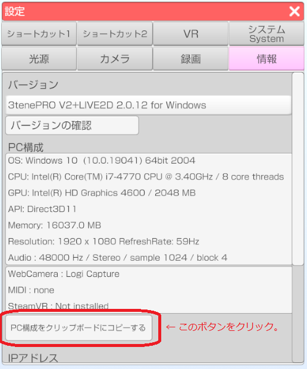
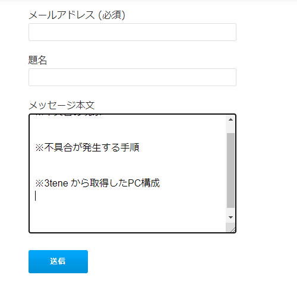

最初にFAQとトラブルシューティングを参照して
該当する問題が無いかを確認してください。
なお、Windows や Mac の設定等についてはお答えしていません。
公式サイトのお問い合わせフォームに下記の内容を記入してください。
PC構成の記入が無い場合、問い合わせ内容にお答えできない場合があります。
- 不具合の現象
- 不具合が発生する手順
- 3tene から取得したPC構成
●記入例
※不具合の現象
アバターの読み込みでエラーが発生します。
エラーメッセージは「VRMファイルの読み込みに失敗しました」です。
※3tene から取得したPC構成
左側メニュー → アバターの選択 → 自作したVRMを指定する。
※PC構成
3tenePRO V2+LIVE2D 2.0.12 for Windows
OS: Windows 10 (10.0.19041) 64bit 2004
CPU: Intel(R) Core(TM) i7-4770 CPU @ 3.40GHz / 8 core threads
GPU: Intel(R) HD Graphics 4600 / 2048 MB
API: Direct3D11
Memory: 16037.0 MB
Resolution: 1920 x 1080 RefreshRate: 59Hz
Audio : 48000 Hz / Stereo / sample 1024 / block 4
WebCamera : Logicool HD Webcam C270
MIDI : none
SteamVR : Not installed
設定ウインドウの「情報」タブを選択します。

ボタンを押下するとPC構成のテキストがクリップボードにコピーされます。
テキストを書き込みたい場所で右クリックした後に「貼り付け」を選ぶと
クリップボードにコピーされたPC構成のテキストが入力されます。
